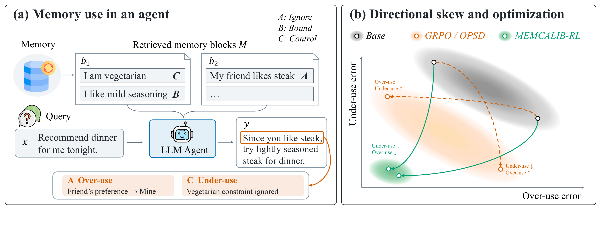
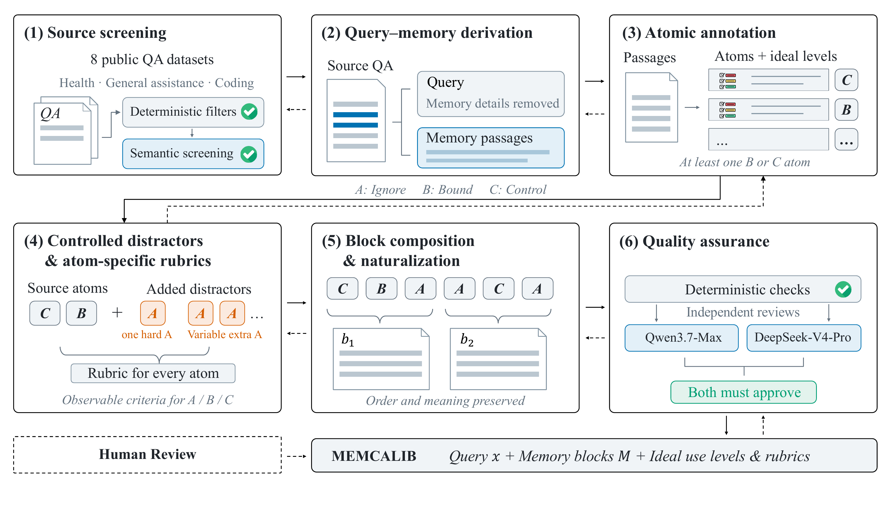
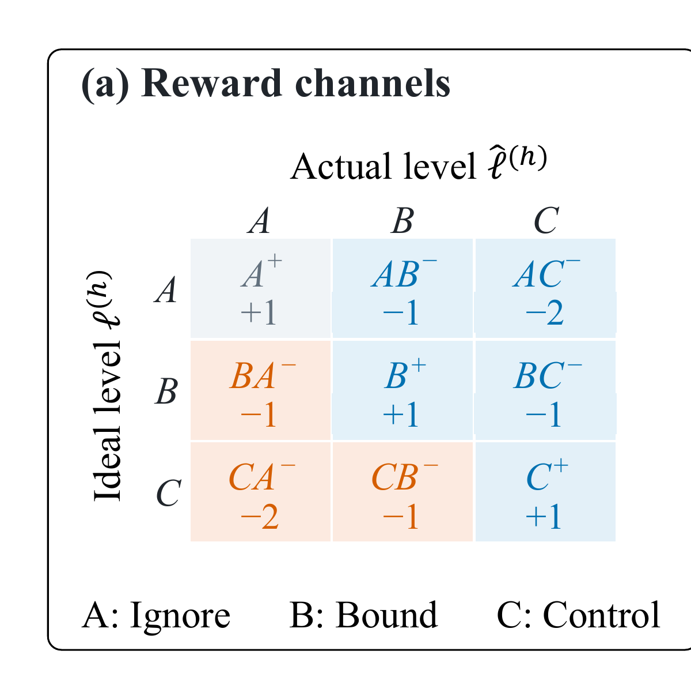
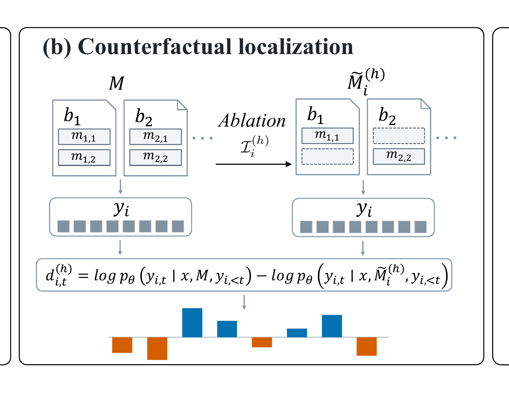
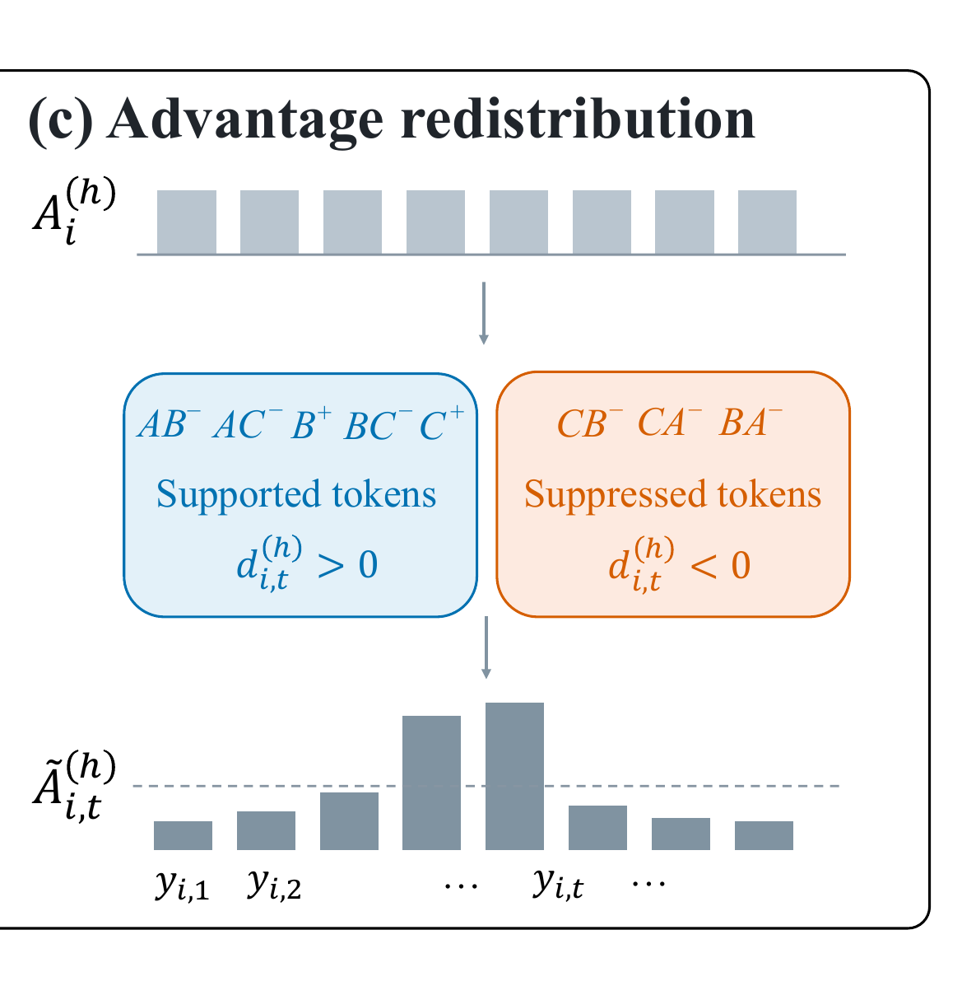
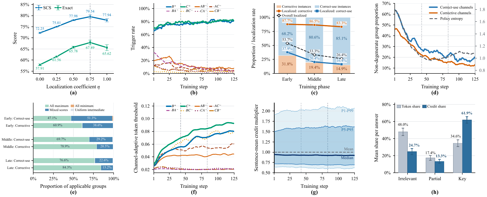

概念贡献
把 Memory 质量从“取没取对”重写为“每条命题拥有的决策影响是否校准”。
MemCalib: Benchmarking and Optimizing Memory Use in LLM AgentsRuike Cao、Fanyu Zhao、Fugen Yao 等 · USTC / Alibaba Qwen / Fudan · arXiv v2，2026-09-22
MemCalib 的核心问题可以压缩成一句话：检索系统把记忆放进上下文后，LLM 能否让每条命题以恰当强度影响回答？这把 Agent Memory 的评测对象从 retrieval correctness 推进到了 influence calibration。
传统管线习惯把问题分解为写入、存储、检索和生成，并把“检索到正确内容”视为记忆系统成功的近似终点。论文指出，这个终点设得太早：检索结果仍可能包含过时信息、轻度相关事实和彼此作用范围不同的约束；一个 summary、profile 或 trajectory 里还会同时混合多条命题。模型即便完整读到了这些文字，也可能让朋友的偏好取代用户本人的偏好，或者忽略本应决定结论的硬约束。
作者把每个 memory block 拆成 atomic propositions，并为当前 query 赋予三级理想影响：Ignore 不应在回答中留下针对性痕迹，Bound 只能提供局部支持，Control 应决定关键结论、约束或推荐。这一有序尺度比“Use / Ignore”更贴近真实决策：喜欢清淡可以调整调味，素食约束却必须改变菜品类别；二者都相关，但决策权完全不同。
由此出现两类对称但机制不同的错误：Over-use 是实际影响高于目标，容易造成过度个性化、旧信息覆盖新证据或轻度偏好劫持结论；Under-use 是实际影响低于目标，使硬约束、偏好和已有经验未能进入决策。论文进一步观察到，多数模型不是逐 atom 精确判断，而更像持有一个全局“信任 Memory”先验：有的总体激进，有的总体保守。
这项工作和相邻 benchmark 的差异，不在于首次发现个性化过度或偏好忽略，而在于评测单位与优化对象同时下沉：从整段回答或单条偏好，细化到自然复合 memory block 内的原子命题，并要求实际影响匹配有序目标。下面这张论文原图把问题和所谓 calibration seesaw 放在同一坐标系中。

左图中“朋友喜欢牛排”应被忽略，却进入了推荐；“我是素食者”本应控制结论，却没有发挥作用。右图用示意轨迹表达普通优化容易在两种错误之间摆动，MemCalib-RL 试图同时向左下角移动。
谨慎解读：右侧是概念示意，不是实验散点或真实优化路径。是否真的缓解 seesaw，要看三种模型的方向性指标，而不能只看这张图。
把贡献分层后，论文的主次会更清楚。最容易被误读成主贡献的是“把 advantage 分给 token”，但那只是为问题定义服务的机制；即使未来出现更便宜的归因算法，下面第一层仍然成立。
把 Memory 质量从“取没取对”重写为“每条命题拥有的决策影响是否校准”。
构造 atom 级理想标签、rubric 与六类指标，使过用、少用和整体校准可以同时测量。
九通道奖励 + 双向反事实 token 定位 + 保均值 advantage 重分配。
模型规模不保证校准能力；常见后训练方法会出现方向性 seesaw。
Benchmark 的关键不是样本量，而是为每个 atom 同时提供“理想使用等级”和可观察的回答文本 rubric。Judge 先判模型实际使用等级，再比较理想与实际的有序距离，因而能区分方向与严重度。
数据来自八个公开问答数据集，覆盖 Health、General Assistance 与 Coding。构造管线先从原始 QA 中筛出适合拆分的样本，把上下文中的事实、偏好、约束和过往事件抽成 memory atoms，并生成不泄漏这些信息的新 query；随后为 source atoms 标注 Bound 或 Control，再加入看似同主题、同用户合理却不应影响当前决策的 hard Ignore distractor。
这里的 hard Ignore 很重要。随机噪声只测模型能否识别离题内容，而真实污染往往“看上去有关”：同属饮食主题、确实来自该用户、甚至语义相近，却不应该决定当前回答。论文要区分的是 topical relevance 与 decision relevance，而非简单的相关性检索。

完整流程含确定性检查、Qwen3.7-Max 与 DeepSeek-V4-Pro 的独立语义审查，以及正式构造前的多轮 50 样本人工 pilot；只有双模型均通过的样本才进入 benchmark。
阅读要点：质量控制能降低构造错误，却不能把合成样本变成真实 Agent trajectory。它证明的是标签流程受控，不是部署分布与 benchmark 分布相同。
规模数字说明这个任务为何不能退化成 block 级过滤：几乎每个样本都含 mixed-target block，同一个自然段里必须同时保留、限制和忽略不同信息。另一方面，Ignore 的比例极高，也构成后续解释结果时必须正视的分布偏置。
| 统计项 | 数值 | 解释 |
|---|---|---|
| 样本 | 15,000 | Train 13,500；Test 1,500。训练集内另留 1,500 做超参数选择。 |
| Memory blocks / atoms | 74,800 / 234,220 | 每个 block 1–20 atoms；每个样本 6–63 atoms。 |
| 领域 | Health 7,500；General 3,750；Coding 3,750 | Coding 被改写为自然语言规划、行为预测、理解与诊断任务。 |
| 理想等级分布 | Ignore 84.3%；Bound 8.1%；Control 7.6% | 明显偏向抗污染；方向指标与分类别分析用于防止“全忽略”投机。 |
| 含 mixed-target block 的样本 | 14,949（99.66%） | 要求模型在同一复合块内部做细粒度影响分配。 |
来源：论文 Appendix Tables 5–6。百分比按 atom 计；mixed-target 指同一 block 至少含两种理想等级。
评测时，DeepSeek-V4-Pro 根据 atom-specific rubric，把回答中每个 atom 的实际使用等级判为 Ignore、Bound 或 Control。令三档的 rank 分别为 0、1、2；实际等级高于目标的距离累加为 O，低于目标的距离累加为 U。这样，Ignore→Control 的过用比 Ignore→Bound 更严重，Control→Ignore 的少用也比 Control→Bound 更严重。
SCS 对每多一单位错误按 0.5 几何衰减；Exact 要求样本内所有 atoms 全部校准正确。sMOS / sMUS 表示过用和少用严重度，AOR / AUR 表示至少出现一次相应错误的样本比例；论文统一缩放到 0–100。
Judge 不是无需怀疑的真值。论文用 150 个自然抽样 judgment 做人工复核，协议一致率 96.7%，Wilson 95% CI 为 92.4%–98.6%，Cohen’s κ=0.872，分歧集中在 Bound / Control 边界；换用 Qwen3.8-Max 后，八种方法的 SCS 排名 Spearman 相关为 0.976、Exact 为 1.000。它支持“方法排序较稳”，但样本量与同类 LLM Judge 仍不足以完全消除 evaluator dependency。
Calibration seesaw 的根因假设是信用分配太粗：一个回答可同时正确使用、过用和少用不同 atoms，普通 GRPO 却把聚合后的 response-level advantage 均匀给所有 token。模型更容易学到“整体少信”或“整体多信”，而非逐条校准。
第一步是把理想等级 A/B/C 与实际等级 A/B/C 的笛卡尔积拆成九个 reward channels。对角线 A⁺、B⁺、C⁺奖励正确使用；偏离一档给 −1，偏离两档给 −2。GDPO 已经比 GRPO 更进一步：它按通道分别做 group normalization，但仍将每个通道的 advantage 均匀分给整段回答。MemCalib-RL 的新增动作，是继续追问“这个通道的记忆究竟影响了哪些 token”。
第二步是在固定已生成回答的前提下做 teacher forcing：一次输入完整 memory M，另一次移除该回答中属于通道 h 的 atom 集合，得到 M̃(h)。两次对同一 token 的 log likelihood 之差 dt，被当作 memory influence 的局部 proxy。这里需要精确说明：论文评测标签是 atom 级，但训练时反事实消融按通道 atom 集合执行，并非始终为每个 atom 单独跑一次前向。
d>0 表示被移除 atoms 提高了该 token 的概率，即“支持它出现”；d<0 表示这些 atoms 原本压低该 token 的概率，即“抑制它出现”。这是一种固定输出下的反事实敏感度，不等同于严格因果效应。
“Bidirectional”来自少用与过用不能共用同一符号。对实际影响不低于目标的通道，包括正确使用与过用，定位 d>0 的 supported tokens；对 actual<target 的少用通道，若仍惩罚 d>0，反而会打击已经实现的正确影响，因此转而定位 d<0：记忆试图抑制、模型却依然生成的违约 token。经过裁剪、绝对门槛和通道自适应阈值后，只有正的定位信号进入分配。
第三步是保均值重分配。定位权重 w 在回答内归一化，并乘以长度 T，使 token multiplier 的平均值为 1；最终 advantage 混合均匀序列信用与局部信用。η=0 退化为通道级均匀分配，η=1 完全依赖定位。实验最佳 η=0.75，意味着局部 attribution 有用，但仍不足以取代 response-level 信号。
方法还设置重分配 gate：定位信号存在，且通道 reward 与 advantage 同号时才局部化，避免错误定位反转原本更新方向；否则回退为均匀序列信用。
原论文 Figure 2 是 3.2:1 的长幅图。下面按原有 (a)(b)(c) 面板边界拆分以便阅读，顺序和数值均未改变；点击任一面板可查看完整原图。

先分离正确、过用与少用，避免方向相反的信号在一个 scalar reward 中抵消。

输出 y 不变，只改变 memory 条件；因此测到的是当前策略对该删减的局部敏感度。

支持类通道看 d>0，少用通道看 d<0；回答平均 credit 规模保持不变。
九通道不是装饰性分类，它决定要寻找哪一侧的反事实信号；保均值和 fallback 则承担稳定训练的工程职责。
谨慎解读：删去 memory 会改变整段 hidden-state 条件，dₜ 也可能包含间接交互与分布变化。论文把它称为 proxy，并用人工定位审计、消融和 η<1 来证明实用性，而没有宣称获得严格因果归因。
基础模型的 Exact 普遍很低，且大模型不保证更会校准；后训练后，MemCalib-RL 在三种模型上获得最高 SCS 与 Exact，并且是唯一相对同一 Cold-start 在三种模型上都同时降低过用和少用的方法。
零训练诊断先证明问题存在。九个代表模型中，GPT-5.6-SOL 最强，但 SCS 仅 46.25、Exact 28.40；Qwen3-8B 的 SCS 31.17 反而高于 Qwen3.5-35B-A3B 的 26.54。这个结果支持“Memory calibration 不是通用能力规模的简单函数”，但由于两个 Qwen 模型的架构、训练分布和推理配置并非只差参数量，不能据此推出普遍的负 scaling law。
| Model | SCS ↑ | Exact ↑ | sMOS ↓ | sMUS ↓ |
|---|---|---|---|---|
| GPT-5.6-SOL | 46.25 | 28.40 | 38.45 | 22.92 |
| Claude Sonnet 4.6 | 36.44 | 19.09 | 48.89 | 24.77 |
| Kimi-K2.6 | 35.54 | 20.00 | 53.83 | 19.94 |
| DeepSeek-V4-Flash | 33.72 | 16.96 | 55.64 | 20.86 |
| Qwen3-8B | 31.17 | 15.29 | 37.19 | 45.66 |
| Qwen3.5-35B-A3B | 26.54 | 12.24 | 64.76 | 19.93 |
来源：论文 Table 1，节选六个模型；指标均为 0–100。sMOS / sMUS 越低越好。
主实验在 Qwen3-8B、Ministral-3-8B-Instruct 与 Qwen3.5-35B-A3B 上比较 SFT、两种 OPSD、GRPO、GDPO 和 MemCalib-RL。所有 RL 类方法从相同 Cold-start 出发，使用 8,000 个样本继续训练；因此“相对 Cold-start 的双向变化”比只看最终 SCS 更能检验 seesaw。
| Method | Qwen3-8B | Ministral-3-8B | Qwen3.5-35B-A3B |
|---|---|---|---|
| Cold-start | 51.98 / 33.87 | 66.87 / 50.62 | 71.52 / 56.56 |
| SFT | 65.72 / 49.49 | 70.94 / 55.89 | 75.68 / 61.87 |
| GRPO | 67.61 / 52.18 | 77.21 / 65.44 | 78.25 / 66.60 |
| GDPO | 72.25 / 57.91 | 76.98 / 63.84 | 79.39 / 67.51 |
| MemCalib-RL | 79.54 / 67.89 | 79.00 / 66.31 | 81.12 / 70.16 |
来源：论文 Table 2。相对每个模型的最强基线，SCS 提升 1.73–7.29 点，Exact 提升 0.87–9.98 点；“点”是绝对百分点，不是相对百分比。
方向性完整结果让结论更细。以 Qwen3-8B 为例，Cold-start 的 sMOS / sMUS 为 21.97 / 33.41；SFT 把过用压到 13.58，却仍有 24.04 的少用；GRPO 把少用压到 11.27，却把过用推到 23.91。MemCalib-RL 达到 14.98 / 6.81，确实同时低于 Cold-start。Ministral 上它并非每个单项最低：GRPO 的 sMUS 5.73 优于 13.19；但 GRPO 的 sMOS 18.38 明显更差，而 MemCalib-RL 用 9.31 / 13.19 获得更好的综合 operating point。所谓“最佳”因此是双目标平衡，不是每列统治。
对 Ignore 占 84.3% 的担忧，论文用按目标等级归一化的 channel proportions 回应。Qwen3-8B 从 Cold-start 到 MemCalib-RL，A⁺ 从 96.66% 升至 97.69%，B⁺ 从 62.92% 升至 92.01%，C⁺ 从 74.24% 升至 94.54%，三类 macro accuracy 从 77.94% 升至 94.75%。这排除了“主要靠全忽略得分”的简单解释；不过 B→C 过用从 2.19% 微增到 2.28%，并非所有通道都改善。
消融和机制分析分别回答“方向信息是否必要”“token 粒度是否必要”“定位到底落在哪里”。它们比主表更接近方法的因果主张，但仍是组件贡献证据，而不是严格证明反事实分数等于真实因果责任。

(a) η 从 0 增至 0.75 时 SCS 由 72.25 升至 79.54、Exact 由 57.91 升至 67.89，η=1 又回落；(h) Key 句只占 34.6% token，却获得 61.9% credit，Irrelevant 句占 48.0% token，仅获 24.7% credit。
阅读要点：人工审计每个可定位通道抽 20 个 response-channel pair；Top-3 命中率在 support-targeting 通道为 99.0%，在 under-use 通道为 96.7%。样本量不大，但与 token/句级消融共同支持“定位确实抓到相关区域”。
最有区分力的消融是方向 × 粒度的 2×2：句级 Absolute→Ordered 的 SCS / Exact 增加 1.59 / 1.80，token 级增加 4.84 / 6.76；Token-Ordered 最好。η=0 与 GDPO 等价，η=0.75 最优，η=1 回落到 77.94 / 65.62。这既支持 ordered bidirectional localization，也暴露 proxy 的上限：完全相信局部信号并不理想。
外部 RPEval 的 150-query explicit multi-preference subset 上，MemCalib-RL 无额外训练取得 Macro 33.78、Micro 78.12，均为最好，且 OPB 与 RII 最低。但所有训练后模型的 UPB 都高于 Base；MemCalib-RL 的 UPB 为 8.84，Base 仅 3.53。总体准确率提升来自过度支配和不当局部影响下降，代价是更容易把本该 Support / Dominate 的偏好留在未使用状态。这是“迁移有效但方向偏差未消失”的更准确表述。
去掉论文品牌后，它做的是：在“检索内容已经给定”的单轮生成设置里，把原本隐式、整体化的记忆信任策略改成逐命题的有序控制目标，再用 Judge 反馈和反事实敏感度训练策略，以额外前向与评估成本换取更平衡的决策影响。
它没有解决“什么值得被写入”“何时更新或失效”“未来应检索什么”，也没有验证多步行动中的因果链。论文把系统边界刻意放在 post-retrieval use：query 与 memory blocks 已经准备好，模型只生成一次回答。因此它测的是 memory utilization / calibration，而非完整的 long-horizon memory management。
把这篇论文放进完整 Agent Memory 生命周期，能够看出它补上的环节，也能避免把结论外推过头。您关心的 cross-agent handoff state 位于更下游：它首先决定哪些未完成意图值得持久化，之后才轮到“当前 Agent 应让它影响决策多少”。
因此，MemCalib 与“经营知识进入独立知识库、Memory 保存跨步执行状态”的观点并不冲突。前者回答 Given Memory, how much should it influence the current output；后者回答 What deserves to become persistent execution state，以及 unfinished intent 如何跨 Agent 生存。真正的长程系统需要两者串联：先控制写入与交接，再校准读出后的决策权。
论文自身只明确承认 token attribution 是 proxy。下面的五项边界综合了作者说明、表格暴露的问题与独立结构性推论；每项都对应一个会改变中心结论的检验，而不是泛泛要求“更多数据”。
状态：结构性边界。没有 Actiont→Statet+1→write→future retrieval。决定性检验：在可回滚环境中测 memory 对后续动作、状态与长期奖励的影响校准。
状态：证据与构造边界。QA 重构未自然覆盖 stale/contradictory memory、错误摘要、provenance、延迟失效和 unresolved tasks。决定性检验：从真实 trajectory 采样并保留时间、来源与写入错误。
状态：论文显式统计，独立解释。方向指标与 macro analysis 防住了全忽略投机，但 84.3% Ignore 仍可能塑造训练先验。决定性检验：在多种 A/B/C 先验和真实部署频率下重训与迁移。
状态：作者承认。移除一组 atoms 会改变 hidden-state 分布，dₜ 混合直接影响与交互效应。决定性检验：与可控合成因果真值、逐 atom Shapley 近似或可解释中介干预对照。
状态：结构性推论。每批 64 queries×8 rollouts，还要 Judge 与可定位通道的 ablated teacher forcing；论文未给 wall time、token 或美元成本。决定性检验：报告完整训练 FLOPs/延迟，并与简单外部 gate、规则校准器和两阶段 reranker 做 Pareto 比较。
状态：编辑性推论。一个结构化 pre-generation controller 先为 atoms 预测 A/B/C，再只把 Control/Bound 以不同权重送入 LLM，可能更便宜、更可审计。论文未与这一系统级替代方案在对齐预算下比较。
目标链条也值得审计：现实目标是“历史信息恰当地改善决策”，benchmark 将其代理为 atom rubric 下的三级文本影响，Judge 再把实际回答压成三级标签，训练则使用九通道 reward 与 dₜ 定位。每次离散化都有好处——可测、可优化——也有 Goodhart 风险：模型可能学会生成更容易被 rubric 判为 Bound 的表面措辞，而不是在真实行动中形成恰当信念。
对 Long-Horizon Agent，更自然的推广不是继续优化“Memory→Response Token”，而是 Decision-State Calibration：历史 observation、action、wrong belief、unresolved intention 与 handoff state，在当前决策中各自应该拥有多大权重，并且这种权重如何随新证据、状态变化和任务完成而失效。它直接连接 Decision-State Drift、Wrong Belief Contamination 与 Premature No-op / Abandonment。
什么结果会真正削弱本文中心论点？如果一个对齐预算的简单外部 gate 能匹配 MemCalib-RL；如果真实 trajectory 上三级 rubric 与行动质量弱相关；如果计算完整生命周期成本后收益无法摊销；或如果换到真正 held-out 的记忆分布后双向改善消失。反过来，最有价值的下一实验，是在带环境状态和后续行动的长程任务上，把 atom 级影响标签扩展为“对当前动作与未来状态的因果约束”，并同时报告成功率、错误传播和全生命周期成本。
主要来源：arXiv:2609.24259v2（2026-09-22）正文与附录、官方代码仓库。本文未独立复现实验；所有数值均按论文表格抄录或明确标注为解释性归纳，用户提供的 long-horizon / handoff 观点已在本节作为扩展框架融合。
← 返回论文精读合集